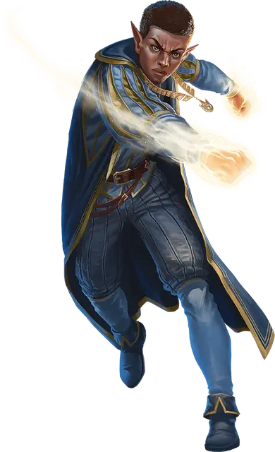

Посвящённый в Комету
Initiate of the Comet
Средний Гуманоид (Колдун), любое мировоззрение

Класс Доспеха 12
Хиты 75 (10к8 + 30)
Скорость 30 футов
| мод | спас | ||
|---|---|---|---|
| СИЛ | 12 | +1 | +1 |
| ЛОВ | 14 | +2 | +2 |
| ТЕЛ | 16 | +3 | +3 |
| мод | спас | ||
|---|---|---|---|
| ИНТ | 11 | +0 | +0 |
| МДР | 13 | +1 | +3 |
| ХАР | 17 | +3 | +5 |
Навыки Магия +2
Чувства пассивное Восприятие 11
Языки Общий, плюс любой один язык
Опасность 4 (1100 опыта)
Бонус мастерства +2
Особенности
Сопротивление магии. Посвящённый совершает с преимуществом спасброски от заклинаний и прочих магических эффектов.
Действия
Мультиатака. Посвящённый совершает две атаки Удар кометы.
Удар кометы. . Рукопашная или Дальнобойная атака заклинанием: +5 к попаданию, досягаемость 5 футов или дистанция 120 футов, одна цель. Попадание: 14 (2к10 + 3) урона силовым полем.
Использование заклинаний. Посвящённый накладывает одно из следующих заклинаний, не нуждаясь в материальных компонентах, используя Харизму в качестве базовой характеристики (Сл спасброска заклинания 13):
• Неограниченно: волшебная рука [mage hand], чудотворство [thaumaturgy]
• 1/день каждое: переносящая дверь [dimension door], предсказание [divination], речь златоуста [enthrall]
Реакции
Момент предвидения (1/день). При попадании броском атаки посвящённый может заставить атакующего перебросить кость и использовать новый результат, что может привести к промаху атаки.
Описание
После посвящения в Вестники Кометы участники изучают магические практики прорицания, которые дают им возможность заглянуть в будущее.